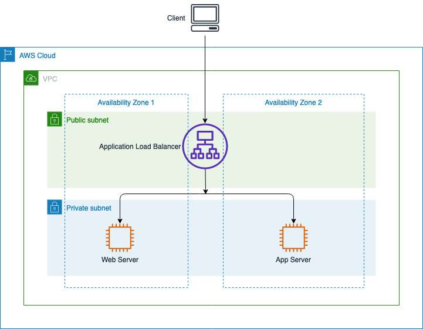
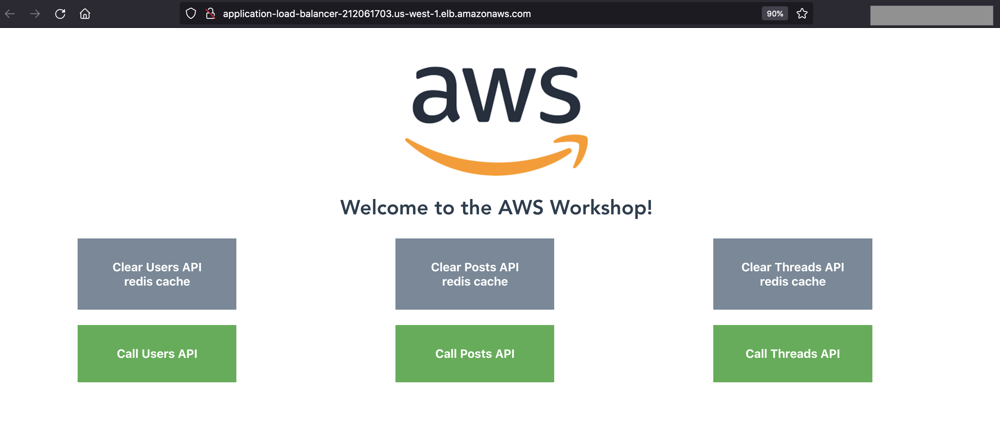

Monolith Application
What are we going to do?
In this section we will provision the monolith web architecture consisting of AWS Application Load Balancer and two EC2 instances Webserver and Appserver running containers for frontend, application, Redis cache and MySQL database.
Step-by-step guide
- Start by logging into your Cloud9 workstation.
- Clone the repository and open the folder.
cd ~/environment
git clone https://github.com/aws-samples/moving-up-stack-workshop
cd moving-up-stack-workshop
Set your default variables
export AWS_DEFAULT_REGION=$(curl -s 169.254.169.254/latest/dynamic/instance-identity/document | jq -r '.region')
export ACCOUNT_ID=`aws sts get-caller-identity --query Account --output text`
- Navigate to CloudFormation file and deploy the CloudFormation template scenario0_infrastructure.yml
cd ~/environment
cd moving-up-stack-workshop/resources/code/scenario0/templates/
- Then run the below CLI command
aws cloudformation deploy --template-file scenario0_infrastructure.yml --region ${AWS_DEFAULT_REGION} --stack-name Monolith --capabilities CAPABILITY_NAMED_IAM
- It may take around 5-6 mins to successfully deploy the CloudFormation template. In the meantime you can explore the architecture below.
Troubelshooting You can navigate to the AWS CloudFormation console, Click on the stack named Monolith and go to Events tab to understand the error if any while deploying the template.
Architecture.

Explore Monolith application.
-
Navigate to the AWS CloudFormation console.
-
Click on the stack named Monolith and go to Outputs tab

-
Select the Application Load Balancer link to open in a new tab. 
-
Explore the monolith application and click on the tabs posts, threads and users.
- Observe the changes with multiple clicks.
- Clear Redis cache for each API calls and call the APIs again.
- Observation: the initial request for each API call is cached by the in-memory database Redis
While accessing the load balancer url, if you are getting error message 502 Bad gateway , wait for a minute for the EC2 instance to launch the container and register it to the load balancer. Refresh the load balancer url in the browser until you see the web application.